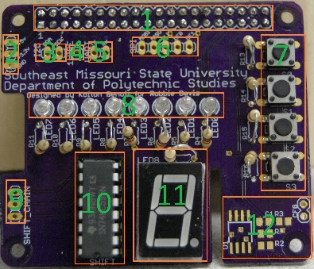
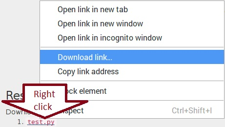

Lab 2:
Test the HAT
Information
TN 255's Raspberry Pi labs used to use a breadboard and individual components. This lead to many mistakes, time lost, and damaged components. The Poly HAT was developed in an independent study to solve these problems. These labs were also written to accompany the HAT. Trust me, you don't want to copy/paste python from a Word document into an SSH session... HAT: Hardware Attached on Top! The Poly HAT is called a HAT because it follows the Raspberry Pi Foundation's HAT standard. This is important, beacause add-on boards aren't supposed to be called HATs if they don't follow the standard. The standard specifies shape, pinout, and power. It even allows for an EEPROM to auto configure GPIO and device tree information!Discrepancy Warning
The labs were developed with a prototype of the Poly HAT, so pictures may look a little different from your HAT.
HAT Layout
Take a few moments to familiarize yourself with the HAT and its components: - Main headers
- Power breakout headers
- I2C breakout headers
- 1Wire breakout header
- UART breakout headers
- SPI breakout headers
- Tactile buttons
- LEDs
- Shift register chain headers
- Shift register
- Seven segment display
- ID EEPROM (see the HAT standard.)
Instructions
- Download the
test.pyfile from the Resources section below. Save it to a place you can find later, such as the desktop.

- If it isn't already, attach your HAT to your Pi
- Open the terminal by clicking the shortcut on the menu bar or by pressing ctrl+alt+t
- Change to the directory where you saved your file by typing
cdfollowed by the path to the target directory and press enter⏎. For example,cd ~/Desktopwill change to the Desktop directory. - Run the test script by typing
python test.pyand press enter⏎. Follow the directions given by the test script. Watch the HAT and make sure all components respond correctly.
Warning!
The fit between the 40 pins and sockets will be quite tight, so be gentle! Bent pins can be annoying to fix!

Hint
Linux (and other Unix-like operating systems) is case sensitive. This means that
desktop and Desktop (note the captial D) are different things!
Linux (and other Unix-like operating systems) use / as a file path seperator, whereas Windows uses \. So your paths need to be formatted like ./path/to/your/file.
Success!
If all the LEDs lit, all the buttons responded, and the 7 segment display showed the numbers 0 through 9 correctly (with and without the
.) you've completed this lab! Move onto the next lab!
Failure!
If one of the components didn't work correctly, make sure the header is properly aligned and is pressed all the way down, then rerun the test.
If the component still doesn't work correctly, ask your instructor or lab assistant for assistance. They'll help troubleshoot the problem, set the board aside for repairs, and give you a replacement (assuming there's any available; follow their instructions, I'm just a web page).